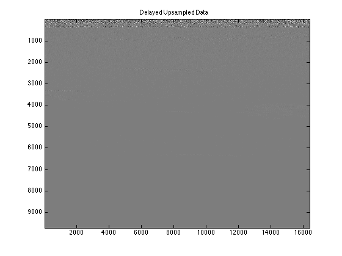
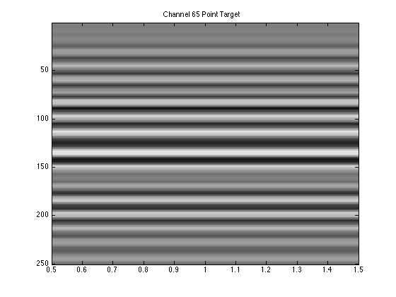

Contents
Intro
time=[0:1:size(pointTarget.data,1)-1]*(1/((pointTarget.samplingRateMHz)*(10^6)));
rate_upsample=((pointTarget.samplingRateMHz)*(10^6))*4;
time_upsample=[0:1/4:size(pointTarget.data,1)-1]*(1/((pointTarget.samplingRateMHz)*(10^6)));
figure;
for aa=1:128
interpolation(:,:,aa)=interp1(time,pointTarget.data(:,:,aa),time_upsample,'linear');
imagesc(interpolation(:,:,aa))
title ('Upsampled Interpolation, No Delay')
colormap('gray')
end
zf=0.04;
for bb=-63.5:1:63.5
xe(bb+64.5)=((pointTarget.elementSpacingMM)/1000)*bb;
diag_dist(bb+64.5)=sqrt(zf^2 + (xe(bb+64.5))^2);
time_diag(bb+64.5)=diag_dist(bb+64.5)/1540;
end
for bb=-63.5:1:63.5
time_delay(bb+64.5)=time_diag(bb+64.5)-time_diag(65);
end
for ee=1:length(time_delay)
samples(ee)=round(time_delay(ee)*rate_upsample);
end
Part A.
interpolation_delay=zeros(max(size(time_upsample)),128,128);
for jj=1:128
for ff=1:128
shifted_interp=max(size(interpolation))-samples(ff);
interpolation_delay(1:shifted_interp,ff,jj)=interpolation(samples(ff)+1:end,ff,jj);
end
end
figure;
cLow=min(min(min(interpolation_delay)));
cHigh=max(max(max(interpolation_delay)));
imagesc(interpolation_delay(:,:),[cLow, cHigh])
title('Delayed Upsampled Data')
colormap('gray')

Part B.
figure;
imagesc(interpolation_delay(1:250,65),[cLow, cHigh])
title('Channel 65 Point Target')
colormap('gray')

Part C.
for jj=1:128
for kk=1:9725
sum_interp(kk,jj)=sum(interpolation_delay(kk,:,jj));
end
end
figure;
imagesc(20*log10(abs(hilbert(sum_interp))),[20 80])
title('Compressed B-Mode Image of Delayed Upsampled Data')
colormap('gray')